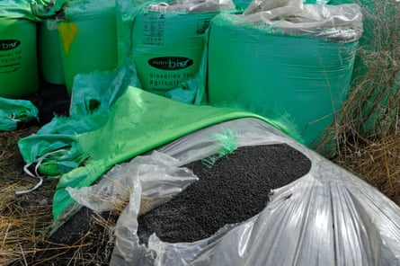
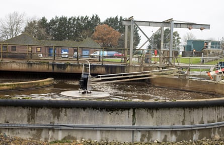

Government ministers have ignored Environment Agency pleas to tighten rules on the use of sludge fertiliser for three years, despite the regulator having said that water company attitudes towards the substance are “akin to fly-tipping on to agricultural land”, it can be revealed.
Sludge, sometimes referred to as biosolids, is a byproduct of the sewage treatment process that is sold by water companies to farmers as a low-cost fertiliser.
The product has faced heightened scrutiny in recent years as scientists have found sludge to contain a wide range of contaminants, including Pfas – known as “forever chemicals” – at levels in excess of those considered safe in emerging science, and microplastics.
However, under existing regulations, water companies are largely only obliged to test for a number of heavy metals. In 2019, the Environment Agency (EA) was given the green light to develop a sludge strategy which proposed bringing use of sludge on farms under tighter rules that govern other potentially environmentally harmful activities, such as sending waste to landfill and running incinerators.
Last year, lawyers representing the campaign group Fighting Dirty took the EA to court over whether its decision to remove a deadline for bringing in this regulatory reform was unlawful.
The group lost its case, but documents and emails submitted by the agency to the court – obtained as part of an Ends Report investigation – have revealed the extent to which the EA sought to persuade the government to implement its plans to tighten the regulatory net on sludge, and how it was ignored.
This includes multiple emails and briefings sent three years ago, when the EA was asked by officials from the Department for Environment, Food and Rural Affairs (Defra) for information for a ministerial submission. The emails reveal that one EA staff member described how the current rules allow water companies to take an attitude to sludge spreading “akin to fly-tipping on to agricultural land”.
Bags of sewage-derived biosolids fertiliser.Photograph: Justin Kase zsixz/Alamy
The EA also warned Defra that practically all microplastics that enter sewage treatment works end up in sludge that is bound for farmland, and that current rules mean the practice of “sludge trading” – where water companies move sludge around to different companies and catchments – is making it almost impossible to “allow tracing of any contaminated sludge to the fields where it is to be spread on to food-growing (or grazing) agricultural land”.
However, later in 2022, a special adviser to the environment secretary, who was then George Eustice, told officials that work on bringing sludge spreading under tighter regulation should be paused because ministers had not been “sufficiently updated on it” – despite the email chains showing regular engagement on the issue between EA and government officials.
Defra’s water quality and agriculture policy team leader told the special adviser: “I apologise for the messaging around the sludge work, which has been confused – I should have been more on top of it. The source of this confusion is a difference of view between us and EA about Defra Group’s readiness to implement any reforms.”
They added: “Due to an understandably incomplete understanding of the process for political decisions and legislative implementation of the reforms, the EA seem to think the process is straightforward and attempted to hurry things up a couple of years ago by publishing a sludge strategy.”
The emails obtained by Ends show that the EA scrambled to express its concern and surprise, with staff stating they had been having fortnightly meetings with the department about its work on sludge.
In an attempt to emphasise the need for reforms, briefing material provided by the EA’s land contamination manager at the time said that the Chemicals Investigation Programme (CIP), which is funded by the water industry, “is revealing that sludge going to agriculture (843,343 tonnes dry weight) contains an estimated 8,096 tonnes dry weight of microplastics”.
“This is thought to be virtually all of the incoming microplastics in wastewater given there is close to 100% partitioning into the sludge,” their briefing stated.
The most recent CIP report, obtained by Ends, not only supports this assertion but gives a slightly higher figure.
A treatment tank in Oxford, where sewage is broken down into sludge.Photograph: Adrian Arbib/Alamy
The report states that extrapolation of sample data “suggests that 8,304 tonnes of microplastics were exported to land through the application of biosolids in England and Wales in 2020 (equivalent to 22 tonnes/day)”.
Three years on, there have been no changes made to sludge spreading rules.
Richard Benwell, chief executive of the nature coalition group Wildlife and Countryside Link, said that “inaction from the previous government, in the face of advice from the EA on the need for tighter rules, is completely unacceptable”.
He added: “The current government must swiftly bring in new regulation to prevent harmful levels of pollutants ending up on fields, alongside measures to reduce toxic chemical production and use at source, to protect people and nature.”
In the US state of Maine, the practice of sludge spreading has been banned after officials discovered high levels of Pfas in water, crops, cattle, soil – and in farmers – from farms where sludge had been spread. The discovery of Pfas contamination on some of these farms has resulted in farmers being put out of business , and last year the US Environmental Protection Agency was taken to court for allegedly failing to regulate the spread of Pfas-contaminated sludge.
Martin Lines, chief executive of the Nature Friendly Farming Network, said: “Any farmer receiving sewage sludge or cake [a form of treated sludge] needs to have a serious think about unintended consequences, and will they have the access to their soil to grow food for the future because of the risk.”
A National Farmers’ Union spokesperson said that addressing contaminants “at source”, alongside clear regulatory standards and continued investment in treatment technologies, were “critical to protect soil health and ensure biosolids remain a high-quality and safe resource for agricultural use.”
The farming employers’ association added that using sludge helped farmers “reduce their reliance on synthetic fertilisers while giving water companies a sustainable outlet for their byproducts”.
However, George Monbiot, the journalist and co-founder of Fighting Dirty, said: “Farmers are being deceived by the water companies … they’re being misled, and this could have very serious implications for their future livelihood, that their land could become unusable, the farmers themselves could suffer serious health impacts, as we’ve seen with certain dairy farmers in the US.”
A spokesperson for the water industry body, Water UK, said: “Using bioresources on land is a long-established and independently regulated process that provides a useful source of nutrients for farming and saves farmers money.
“Any standards and assessment techniques are a matter for the government and the regulator and need to be based on firm evidence and detailed scientific research.”
The spokesperson said water companies were conducting trials to see if sludge could be used for “other purposes, such as an alternative fuel for aviation”.
They added: “The UK government has banned the sale of some products containing microplastics and we need the same action on Pfas. We also need a national plan to remove it from the environment, which should be paid for by the polluting manufacturers.”
A spokesperson for the EA said the regulator remains “committed to the safe and sustainable use of sludge in agriculture and will ensure water companies can contribute to productive farming whilst meeting their environmental obligations to clean up waterways and promote soil health”.
The spokesperson added that the EA would “continue to work closely with Defra to improve the regulatory framework for the use of sludge”.
A Defra spokesperson said: “We need to see the safe and sustainable use of sludge in agriculture to help clean up our waterways. The Independent Water Commission will explore a range of issues, including the regulatory framework for sludge spreading, and we continue to work closely with the Environment Agency, water companies and farmers in this area.”